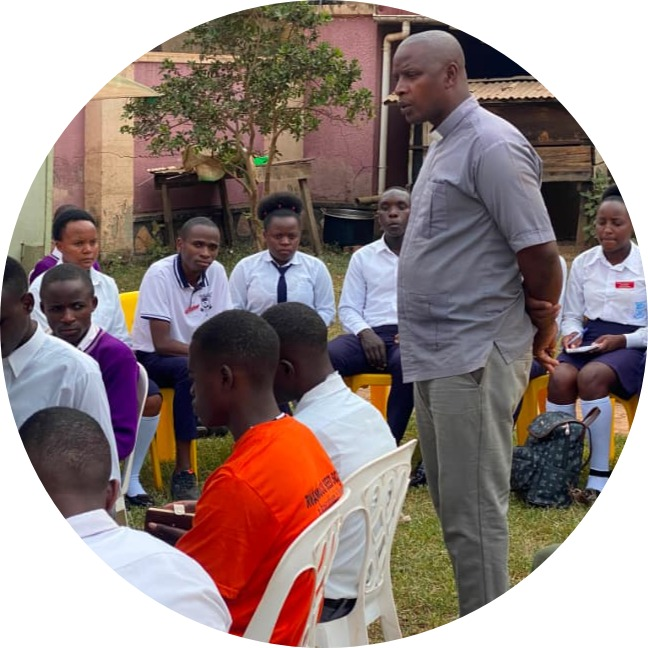
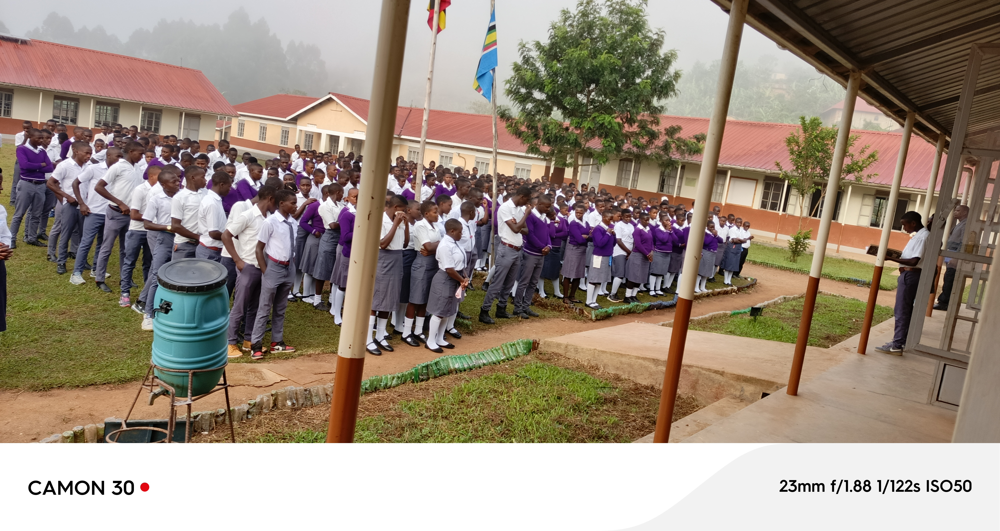
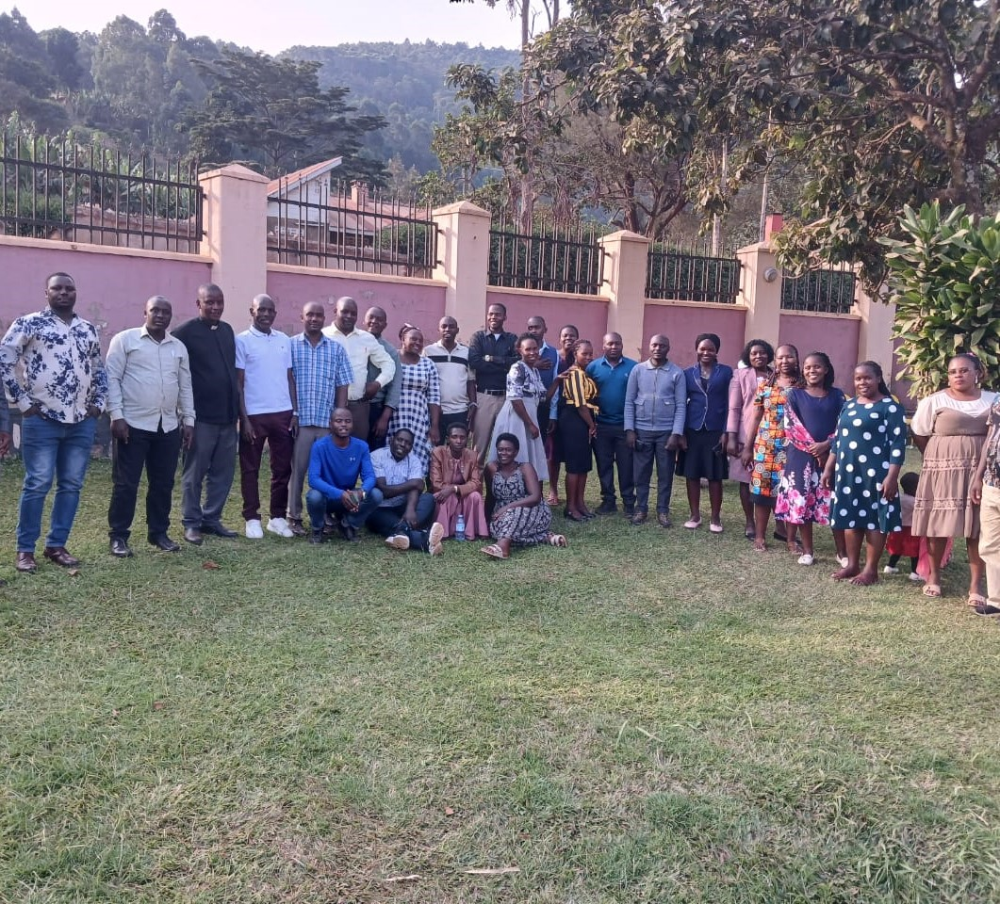

RWAMUCUCU SEED SECONDARY SCHOOL
P.O BOX 1146
KABALE-RUKIGA DISTRICT
| HOME | ACADEMICS | PROJECTS | SPORTS | ONLINE FORM |
Our vision is to deliver a learner-centered, competency-based education that equips students with practical, employable skills, fostering critical thinking, creativity, and patriotic citizenship to drive Uganda's socio-economic development. our aim is shift focus from theory to hands-on skill acquisition, ensuring learners excel in research, continuous assessment, and practical project work
Rev. Ivan Muhoozi stands as more than just a headteacher; he embodies the true spirit of a father, guardian, and mentor. In this picture, he is seen engaging directly with his prefectorial body during an outdoor study session away from the traditional classroom. This moment beautifully captures his dedication to nurturing leadership, providing guidance, and fostering a supportive, family-like environment for his students as they prepare to navigate the future.

Rwamucucu seed secondary school is government-aided institution, located in Rwamucucu sub county,nyakagabagaba parish,kihorezo

A team that works together, travels together. Capturing memories with the wonderful teachers and staff of Rwamucucu Seed Secondary School during our recent getaway.
